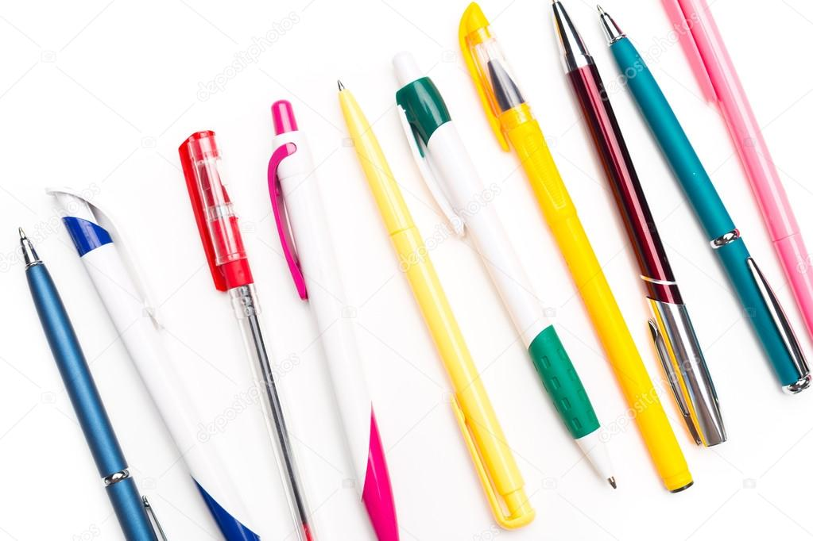

Picking A Good Pen
When looking for a good pen there are many diffrent options to look at. This is where your pros and cons come in handy to help figure out which is best.
Pros
- gel pens
- ball point tips
- clicking pen
- pens with clips
Cons
- no grips
- poor plastic
- bad ink quality
Pen Website
Pens.com
Different Pens
